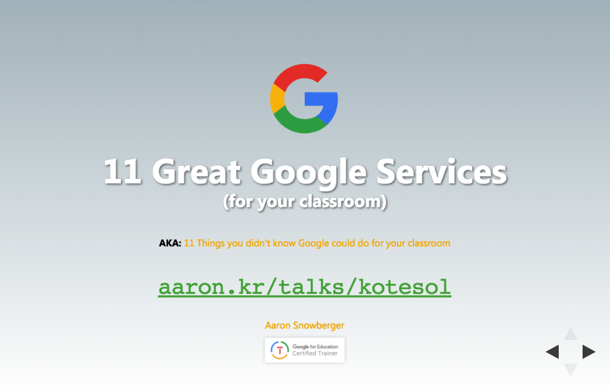

안녕하세요, 나는 에런입니다. Hi, I'm Aaron.
I'm a
React + WordPress developer
Graphic + Magazine Designer
Google Certified Educator + Trainer
and I teach ESL & Computers in Korea.
Find me on LinkedIn or elsewhere:
Talks
- 2017
-  11 Great Google Services (for your classroom) Jeonju KOTESOL Conference 2017 11 November 2017
- Google Classroom 101 KOTESOL Int'l Conference 2017 21 October 2017
- G Suite for Education Training GPA HS Teacher Training Seminar 16 August 2017
- Teacher Tech Tips GPA HS Teacher Training Seminar 17 February 2017
- 2015
- A Roadmap for WordPress as LMS KOTESOL National Conference 2015 30 May 2015
- Computer Science as a Career GPA HS Career Day 16 April 2015
- WordPress in your Classroom as an LMS Jeonju KOTESOL Workshop 14 March 2015
- A Comprehensive Overview of WP Site Owner Roles Jeonju WordPress Meetup 7 March 2015
- Open Source, WordPress, & the Community Seoul WordPress Grand Meetup 2015 28 February 2015
- WordPress Overview Jeonju WordPress Meetup 24 January 2015
Classes
Technology
- AP Computer Science (Java) Blue Pelican Java 2016
- AP Computer Science Principles (JavaScript) Code.org 2017
- Computer A (Office) Touch typing, MS & Google Office Suite 2013, 2014, 2015
- Computer B (Web programming) HTML, CSS, JS, jQuery, Bootstrap 2013, 2014, 2015
- Computer C (App programming) Android / iPhone App Programming 2018
- Graphic Design: Branding 2016, 2017
- Yearbook / Publishing 2016, 2017
- Robotics VEX Robotics 2016, 2017
- Computer Science Discoveries Code.org 2017
- Digital Citizenship Common Sense Media 2016
- Algebra 1A Holt Algebra 2017
- Earth Science B Holt Earth Science 2017
ESL
- Freshmen Conversation Beginner, Intermediate, Advanced 2010-present
- Sophomore Conversation Beginner, Intermediate 2010-present
- Speech & Drama Speaking of Speech 2010-present
- Reading & Writing Practical English Series 2016
- Screen English Extr@ 2010-present
- Business English TESOL Speaking 2010
- IETTP Teacher Training TESOL Speaking 2010
- IETTP Drama TESOL Speaking 2010
- IETTP Debate TESOL Speaking 2010
- TOEFL Writing & Reading TESOL Speaking 2010
- Middle / High School ESL Debate TESOL Speaking 2010
- Summer / Winter ESL camps Elementary, Middle, High school 2010
Projects
About
View full profile on LinkedIn
Web Development
I'm a skilled web developer with over 7 years experience building and managing client websites and 3 years experience contributing to Open Source projects like WordPress. I'm proficient in HTML5, CSS3, PHP, and WordPress; a competent user of JavaScript, jQuery, Foundation and Bootstrap Frameworks; and have taught website design and development as part of the core technology curriculum in GPA International High School since 2013.
Graphic Design
I'm also an experienced graphic designer specializing in Adobe InDesign, Adobe Photoshop, and Adobe Illustrator. I've freelanced for over 5 years and have professional experience creating business cards, brochures, ads, flyers, posters, banners, t-shirts, logos, websites, branded materials, newsletters, magazines, books, and more. Additionally, I teach graphic design and computer literacy courses at GPA High School.
ESL
I'm an experienced ESL teacher with over 10 years in classrooms in Korea. I've taught conversational English and Speech/Presentation classes to university students for over 6 years at Jeonju University. Additionally, I've taught TOEIC Speaking, TOEFL Writing, Speaking, and Reading, Drama, and Debate for over 3 years to various age levels from middle school to adult.